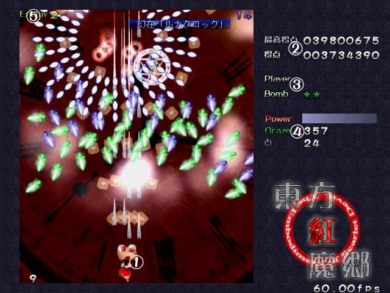

２１世紀の２０世紀巫女さんＳＴＧ
東方紅魔郷 〜 the Embodiment of Scerlet Devil.
■画面説明

１．プレイヤー
２．最高得点 ･･･ 現在のキャラ、武器、難易度での過去ハイスコア
得点 ･･･ プレイ中のスコア
３．プレイヤー残機と残りボム数
４．パワー ･･･ Ｍａｘと表示されたらパワー最大です（１２８個で最大）
現ステージでの敵弾かすり回数
現ステージでの得点アイテム取得数
５．真ん中のゲージ、ボス（中ボス）の残り体力
左の数字、ボス（中ボス）の体力ゲージの残り本数
右の数字、ボス（中ボス）の自爆までの残り時間
プログラム本体、イメージデータ、曲データ、及びマニュアル全ての著作権は製作者ＺＵＮにあります。
許可なしで複製、転載、配布を禁じます。
2002 (C)opyright ZUN. All rights reserved.